Final Projects
Student Name: Kelvin Huang
Final Project 1: Light Field Camera
The Light Field Camera project explores how to capture and manipulate the entire light field of a scene. This includes information about the intensity and direction of light rays, enabling advanced functionalities such as refocusing and perspective shifts.
Part 1: Depth Refocusing
The objects which are far away from the camera do not vary their position significantly when the camera moves around while keeping the optical axis direction unchanged. Nearby objects, on the other hand, vary their position significantly across images. Averaging all the images in the grid without any shifting will produce an image sharp around far-away objects but blurry around nearby ones. Similarly, shifting the images 'appropriately' and then averaging allows one to focus on objects at different depths.
To refocus at different depths, the relative positions of each image in the grid are used to calculate the required shifts for alignment. By applying these shifts and averaging the grid images, we simulate focusing on objects at various depths. A range of depth parameters (\( \alpha \)) is used to generate images focusing from the background to the foreground.
Key Results
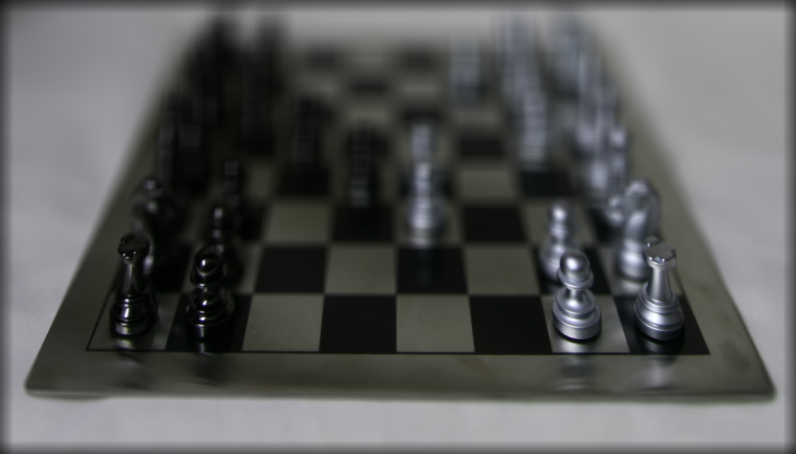
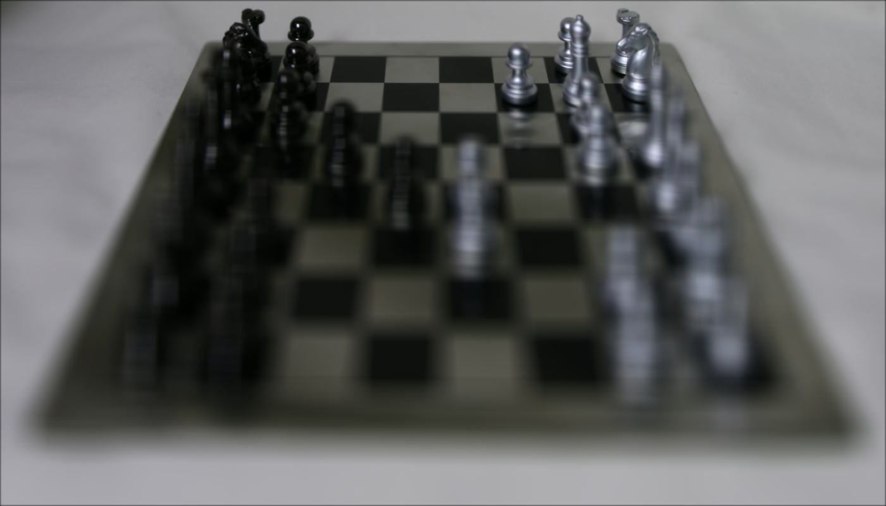
GIF of Refocusing
Below is a GIF showing the continuous depth refocusing effect as \( \alpha \) changes:

Part 2: Aperture Adjustment
Aperture adjustment allows us to simulate the effects of changing the size of the camera's aperture. A larger aperture includes more viewpoints, leading to more pronounced depth-of-field effects and blur in out-of-focus regions. Conversely, a smaller aperture reduces the number of viewpoints, creating sharper images across all depths.
In this part of the project, we implemented aperture adjustment by selecting a circular region of viewpoints around a central image, based on the desired aperture size (radius). The selected viewpoints were averaged to generate images simulating different aperture settings.
Approach
The method involves the following steps:
- Select viewpoints within a circular aperture defined by a radius around the central image. The distance of each viewpoint from the center determines its inclusion in the aperture.
- Average the selected viewpoints. Larger apertures, with more viewpoints, increase the depth-of-field blur, while smaller apertures retain sharper focus across the scene.
- Generate and save images for various aperture radii to visualize the effect of aperture adjustment.
Key Results
The following images illustrate the effects of aperture adjustment for different radii. A smaller aperture radius results in a sharper image, while a larger radius creates a more pronounced depth-of-field effect with blurred out-of-focus regions.
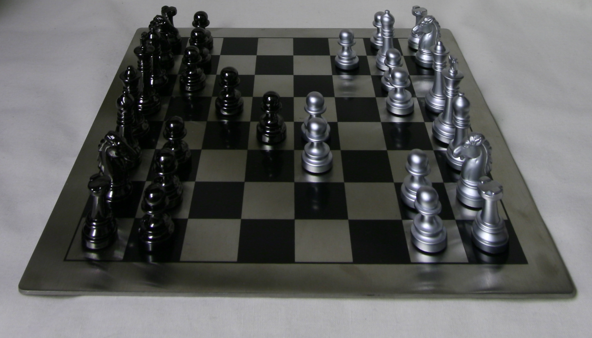
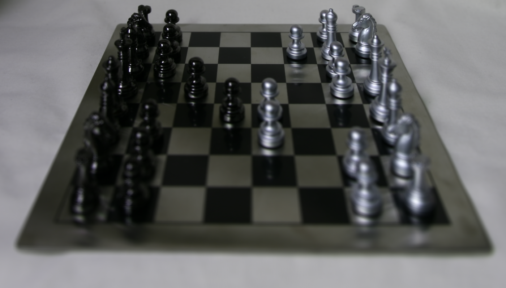
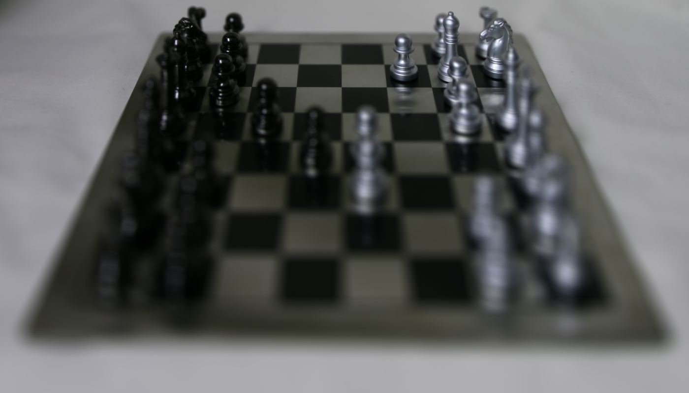
GIF of Aperture Adjustment
Below is a GIF showing the gradual change in the depth-of-field effect as the aperture radius decreases:

Bells & Whistles: Using Real Data
Using Real Data: I collected my own data by clicking multiple images with my iPhone and implemented refocusing. I took 9 images in a 3×3 grid, from (0,0) to (2,2).
Below are 3 images captured at different positions in the grid: (0,0), (0,1), and (0,2).
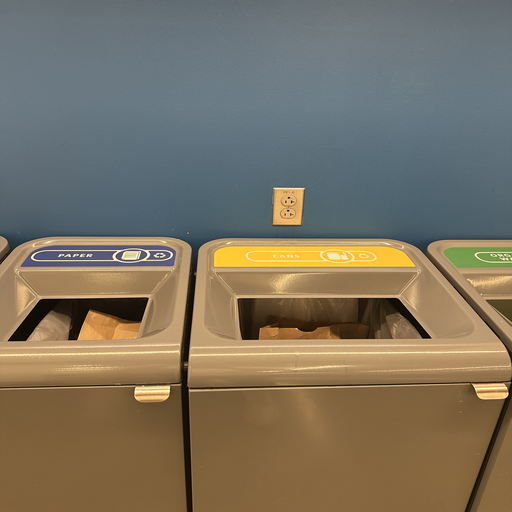
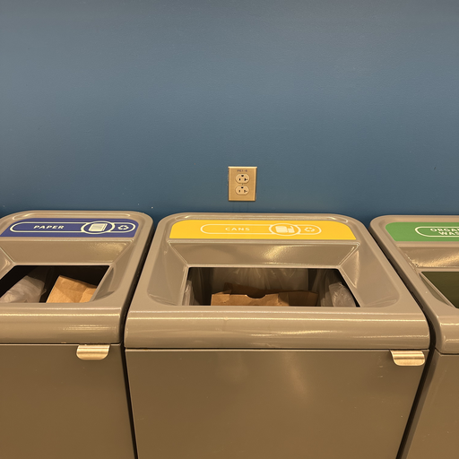
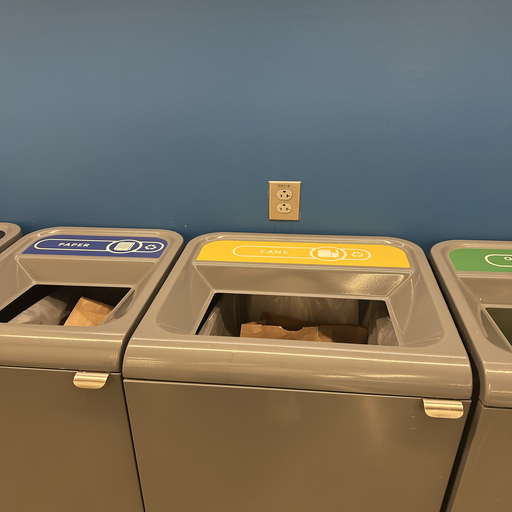
Here is what I get:

Reflection: The reason why my photos do not work well is because they were shot by hand, which caused inconsistent camera movement and misalignment between shots. Additionally, I captured only a 3x3 grid with 9 photos, which is insufficient to produce smooth depth refocusing or simulate varying apertures effectively. Finally, I did not record the precise relative positions of the camera for each shot, so the lack of offsets makes it impossible to calculate accurate shifts for proper alignment and depth computations. These limitations combined significantly reduced the quality of the results.
Final Project 2: Image Quilting
The goal of this assignment is to implement the image quilting algorithm for texture synthesis and transfer, described in this SIGGRAPH 2001 paper by Efros and Freeman. Texture synthesis is the creation of a larger texture image from a small sample. Texture transfer is giving an object the appearance of having the same texture as a sample while preserving its basic shape.
Part 1: Randomly Sampled Texture
Randomly samples square patches from a sample in order to create an output image. Simple but not very effective.
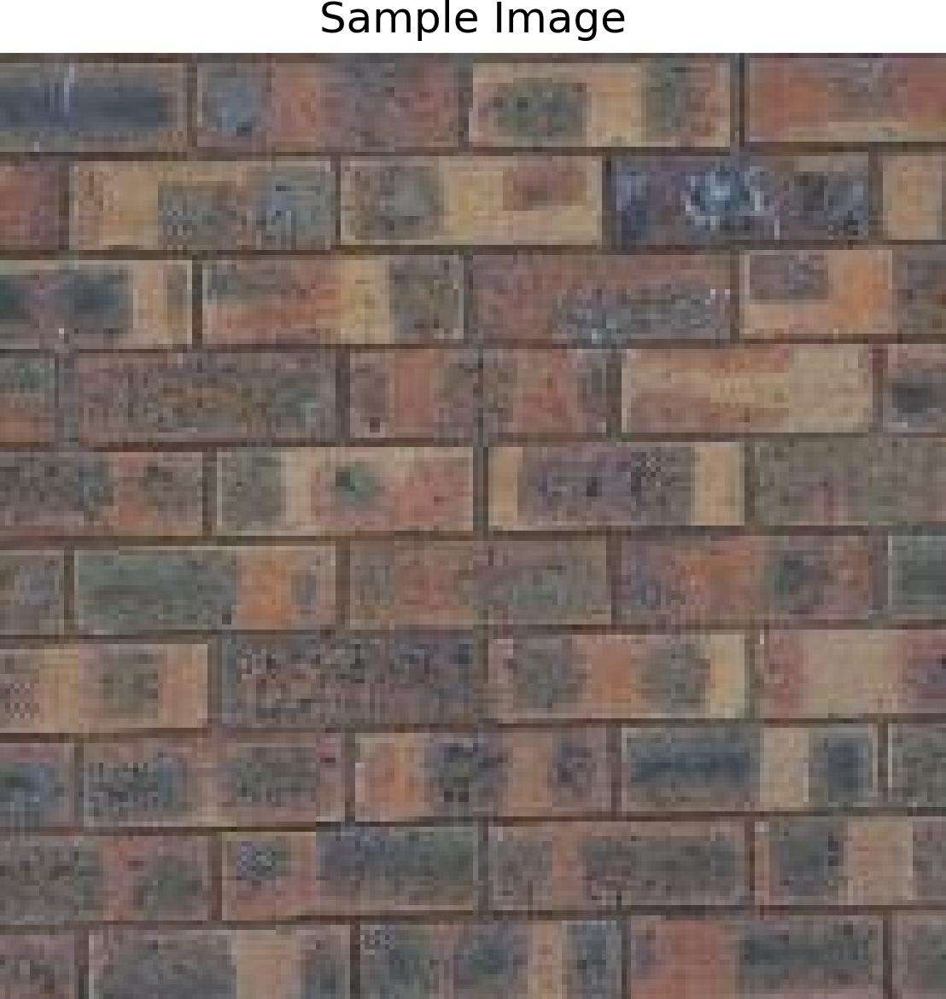
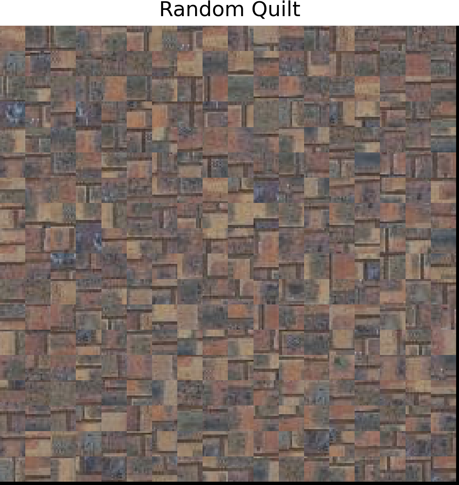
Part 2: Overlapping Patches
The 'quilt_simple' function generates a textured output image by sampling random patches from an input texture and stitching them with overlapping regions. Starting with a random patch for the upper-left corner, subsequent patches overlap horizontally, vertically, or both. Overlapping costs are computed using 'ssd_patch', which calculates the Sum of Squared Differences (SSD) efficiently with a mask. Patches are selected using 'choose_sample', which randomly picks a low-cost patch among the 'tol' smallest costs. Selected patches are copied into the output image, ensuring correct alignment and overlap.
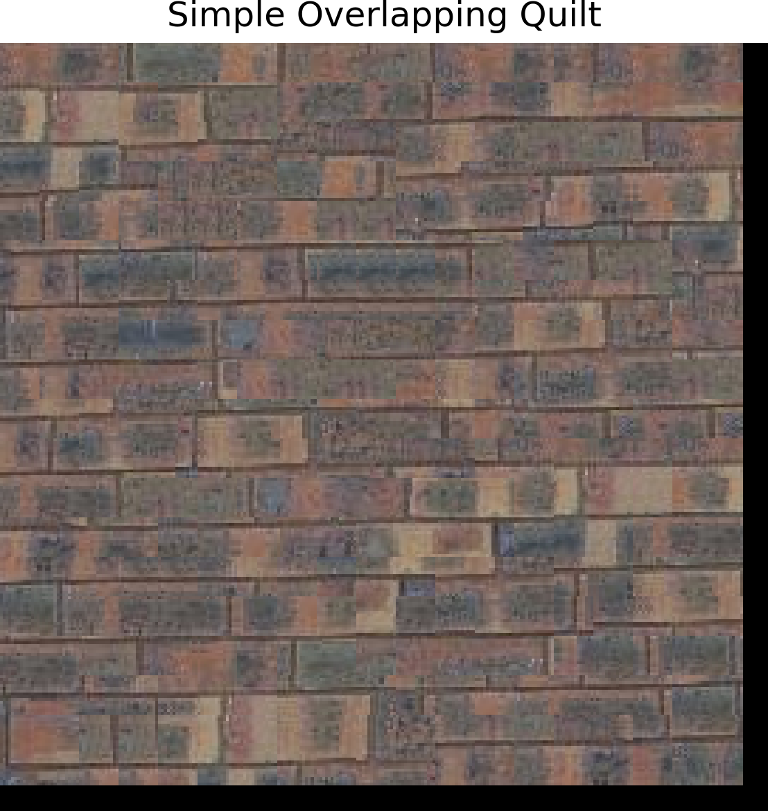
Part 3: Seam Finding
Enhance the quilt_simple function with seam finding to minimize edge artifacts by integrating a quilt_cut function. Use the cut function from utils.py to calculate the minimum-cost seam for overlapping regions based on square differences (summed over RGB channels) between the output image and sampled patch. For patches with both top and left overlaps, compute two seams and combine masks using np.logical_and(mask1, mask2). Vertical seams can be computed using cut(bndcost.T).
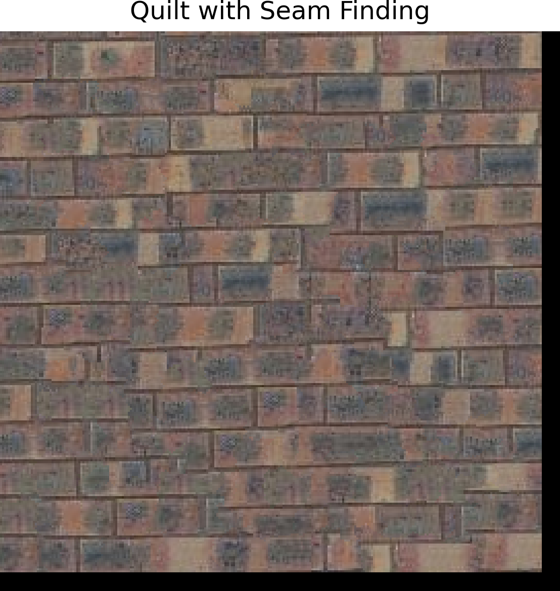
Compare the three results.
Part 4: Texture Transfer
Create a function texture_transfer based on my quilt_cut function for creating a texture sample that is guided by a pair of sample/target correspondence images. Note: this part is non-iterative version of texture transfer.
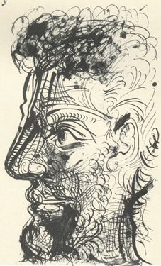
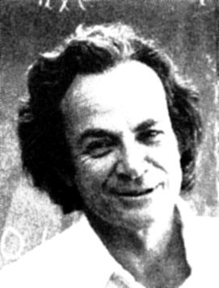
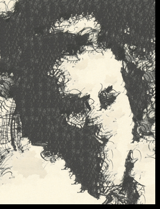
Bells & Whistles 1: Iterative Texture Transfer
The texture_transfer_iterative function performs texture transfer iteratively over multiple scales. In each iteration, it reduces the patch size for finer detail, computes overlap, guidance, and prior iteration costs to select low-cost patches, and applies seam cutting to blend patches seamlessly. Each iteration refines the output based on the results of the previous one, progressively aligning the texture to the guidance image while improving coherence and detail.
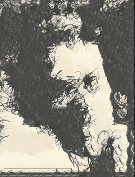
Bells & Whistles 2: Fill holes
Fill holes of arbitrary shape for image completion. Patches are drawn from other parts of the target image.
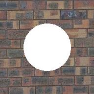
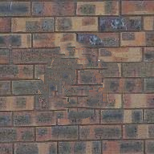
Conclusion
In the Light Field Camera project, I learned how to work with light field data to create cool effects like depth refocusing and aperture adjustments. It was fascinating to see how shifting and averaging images could change the focus, and working with real data taught me the importance of precise alignment and how small mistakes can impact results. In the Image Quilting project, I got hands-on experience with texture synthesis and transfer. Starting with simple random sampling, I progressed to seam finding and iterative methods, learning how to handle overlaps and create smooth textures. It was exciting to see how textures could be guided by an image while maintaining their natural look. This course, CS180, has been such a rewarding experience. It challenged me to think creatively and apply concepts in real-world ways. I’ve learned so much about computational imaging and had fun experimenting along the way. Huge thanks to the instructors and TAs for making this such an awesome class!